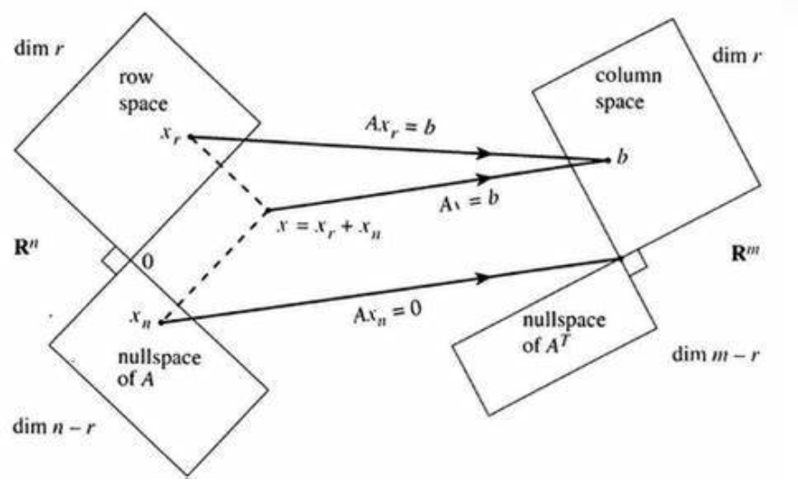

如果本科线代能有这样的教育方式和路线，我何苦现在还要来听这门公开课(
记录一下听的过程中觉得有用的信息好了。
从线性方程组开始
教授（下简称 GS）认为线性代数的基本用途是解线性方程组，比如有这样一个方程组： \[ \begin{cases} 2x-y = 0 \\[2ex] -x+2y=3 \end{cases} \] 我们可以从以下三个角度考虑其解法。
行图像：对于每个方程，我们都可以在二维平面上画出一条直线，这些直线的交点就是我们想要的解。
列图像：对于每个变量的参数，我们都可以把方程组写成若干向量线性组合的形式（本例中是 \(x\left[\begin{matrix}2 \\ -1\end{matrix}\right] + y\left[\begin{matrix}-1 \\ 2\end{matrix}\right] = \left[\begin{matrix}0 \\ 3\end{matrix}\right]\)）。只要找到一个合适的组合，方程组得解。
此处如果如果每次取任意的 x 与 y，则等式左侧的向量的组合能布满整个二维平面。
拓展到多元方程组也是同理。
我们构造一个系数矩阵 \({A} = \left[\begin{matrix}2 & -1 \\ -1 & 2\end{matrix}\right]\)，令 \(\vec{x} = \left[\begin{matrix}x \\ y\end{matrix}\right], \vec{b} = \left[\begin{matrix}0 \\ 3\end{matrix}\right]\)，然后方程组可以写成这样子： \[ A\vec{x} = \vec{b} \]
是否有解？
这时要考虑一个问题：是否任意 \(\vec{b}\) 都能让上面那个方程有解呢？
从行图像的角度来讲，如果方程组有解，则所有方程在坐标系上对应的图像（直线、平面、体积）存在交集。如果某一个 \(\vec{b}\) 不能满足上面条件，则无解（反之有解）。
从列图像的角度来讲，如果某一个 \(\vec{b}\) 不能成为 \({A}\) 列向量的线性组合，则无解（反之有解）。
如何求解？
计算机软件（以及人类）计算时最常用的方法是高斯消元法，将原方程 \({A}\vec{x} = \vec{b}\) 转换为新的方程 \({U}\vec{x}=\vec{c}\)。
其中 \({U}\) 为行阶梯最简型矩阵。
消元过程
每一步消元都可以视为将原矩阵乘上一个置换矩阵。左乘置换矩阵可以完成原矩阵的行变换，右乘置换矩阵则为列变换。
逆矩阵
对于消元过程，每一步都是可逆的。对于一个置换矩阵 $ E_1$，我做了其相反的操作即可得到原矩阵，若这一相反的操作用 $ E_1^{'}$ 表示，则有 $ E_1^{'} E_1 A = A$ 。
得到 $ E_1^{'} E_1 = {I}$，从而可以用 $ E_1^{'} = { E_1}^{-1}$ 表示逆矩阵。第一个式子代表了逆矩阵的定义与性质。同样也有 \(( E_1^{'})^{-1} = { E_1}\) 且 $ E_1 E_1^{'} = {I}$ 。
其中 $ I$ 是单位矩阵（对角线元素全为 1，其它元素全为 0 的方阵）
怎么求逆矩阵？
高斯-若尔当消元法(Gauss-Jordan Elimination)告诉我们，通过构造 \(\left[\begin{matrix}\ {A}\ |\ {I}\ \end{matrix}\right]\)，再通过消元法将左侧矩阵变为单位矩阵 \({I}\)，易得这一系列行变换操作对应的矩阵是 \({A}^{-1}\)，相当于左乘了一个矩阵 \({A}^{-1}\)，则右侧矩阵乘完后自然就变为了 \({A}^{-1}\)。
接下来引入拓展到向量空间
向量空间
一个向量空间应该满足这样一个封闭性条件：对于空间中的任意向量 \(\vec{u}, \vec{v}\)，其任意线性组合 \(a\vec{u}+b\vec{v}(a, b\in R)\) 必然存在于空间中。显然，所有向量空间必须包括零向量。
子空间
包含于向量空间之内的一个向量空间称为原向量空间的一个子空间。
以 \({R}^3\) 为例（它代表具有三个实数分量的所有向量的集合），其子空间包括：
- 其本身（三维）
- 任一过原点的平面（二维）
- 任一过原点的直线（一维）
- 零向量
列空间
矩阵 \({A}_{m\times n}\) 的所有列向量张成的空间称为其列空间，以 \(C({A})\) 表示。\(C({A})\subset R^m\)
零空间
所有满足方程 \({A}\vec{x} = \vec{0}\) 的解的集合称为矩阵 \({A}_{m\times n}\) 的零空间，以 \(N({A})\) 表示。\(N({A})\subset R^n\)
计算零空间
相当于求方程 \({A}\vec{x} = \vec{0}\) 的所有解。通过消元法与列交换构造出新的方程 \({U}\vec{x}=\vec{0}\)，其中 \({U}\) 是由 \(r\) 个主元列与 \(n-r\) 个自由列组成的形如下式的行阶梯型矩阵： \[ U = \left[ \begin{matrix} \quad I_{r\times r} & F_{r\times n-r} \quad \\ \quad 0 & 0 \quad \end{matrix} \right] \]
自由列可以表示为其左侧主元列的线性组合。
原方程变为 \({U}\) 的主元行乘以 \(\vec{x}\)，即 \(\left[\begin{matrix}\ {I}\ |\ {F}\ \end{matrix}\right] \left[\begin{matrix}\ \vec x_{pivot} \\ \ \vec x_{free} \ \end{matrix}\right] = 0\)。如果对 \(\vec x_{free}\) 中 \(n-r\) 的变量自由取值，我们能得到 \(n-r\) 个线性无关的特解，\(N({A})\) 则是由这些特解张成的向量空间（维度为 \(n-r\)）。若把这些特解作为列向量写到一个矩阵 \({N}\) 中，则有 \({U}{N} = {0}\)，易得： \[ N = \left[\begin{matrix}\ {-F}_{r\times n-r} \ \\ \ I_{n-r\times n-r} \ \end{matrix}\right] \] 其中 \({-F}\) 对应 \(\vec{x}_{pivot}\)，\({I}\) 对应 \(\vec{x}_{free}\)
如果方程右侧不为零向量
首先抛出结论：若 \(\vec{b} \in C({A})\)，则方程 \({A}\vec{x} = \vec{b}\) 有解。
当方程有解时，可以先找到方程一个特解，再与 \(N({A})\) 进行线性组合，即可得到最后的解。
秩
矩阵的秩等于矩阵的主元数。若 \(rank({A}_{m\times n}) = r\)，则必有 \(r\leq m, r\leq n\) 。
- 列满秩：即 \(r=n<m\)，每一列都是主元列，矩阵没有自由列，\(N({A})\) 中只有零向量，方程 \({A}\vec{x} = \vec{b}\) 要么无解，要么有唯一解。
- 行满秩：即 \(r=m\leq n\)，方程 \({A}\vec{x} = \vec{b}\) 有无穷多解。
- 方阵满秩：即 \(r=m=n\)，方程 \({A}\vec{x} = \vec{b}\) 总有唯一解。
- 行列均不满秩：即 \(r<m, r<n\)，方程 \({A}\vec{x} = \vec{b}\) 要么无解，要么有无穷多解。
线性相关性
若一组向量的非零线性组合可以得到零向量，则称这组向量线性相关；反之，则称其线性无关。
基
向量空间的基是一组线性无关的向量，且这些向量能够张成该向量空间。
维数
空间中的每一组基都有相同的向量数，这个数值就是空间的维数，通常用 \(dim\) 表示。
基本子空间
除了列空间和零空间，还有
- 行空间：矩阵 \({A}_{m\times n}\) 的所有行向量张成的空间称为其列空间，以 \(R({A})\) 表示。\(R({A})\subset R^n\)
- 左零空间：所有满足方程 \({A^T}{x} = {0}\) 的解的集合称为矩阵 \({A}_{m\times n}\) 的左零空间，以 \(L({A})\) 表示。\(L({A})\subset R^m\)
\({A}\) 的 \(r\) 个主元列构成了 \(C({A})\) 的一组基。
\({A}\vec{x}=\vec{0}\) 的一组特解对应于 \({A}\) 的 \(n-r\) 个自由列，并构成了 \(N({A})\) 的一组基。
则得到这样一个结论： \[ rank(A) = \# C_{pivot} = dim(C(A)) = r = dim(R(A)) \] 同样的： \[ \#C_{free} = dim(N(A)) = n - r \\[2ex] dim(L(A)) = m-r \] 不妨用下图来表示这一切
